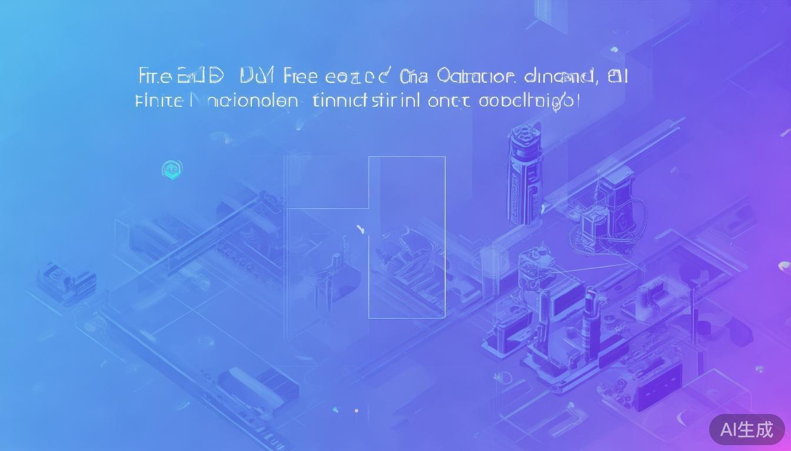

开源仿真工具 · 一键安装 + 第一个案例
五个最常用的开源仿真工具，逐个给你「一键安装命令 + 第一个案例步骤」。装好、跑通第一个案例，就算入门。全部免费、开源、能真动手。
0. 先搞清每个工具是干嘛的
| 工具 | 领域 | 一句话 | 第一个案例 |
|---|---|---|---|
| FreeCAD | 机械 CAD / 有限元 | 开源版 SolidWorks | 画方块并拉伸成 3D |
| KiCad | 电路设计 | 开源版 Altium | 画一个 LED 电路 |
| Gazebo | 机器人/物理仿真 | 开源版 V-REP | 加载世界 + 放一个盒子 |
| LTspice | 电路仿真 | 免费版 SPICE | RC 电路瞬态仿真 |
| OpenFOAM | 计算流体力学(CFD) | 开源版 Fluent | 顶盖驱动方腔流 |
1. FreeCAD —— 机械建模与有限元

一键安装：
# Windows（PowerShell）
winget install FreeCAD.FreeCAD
# macOS
brew install --cask freecad
# Ubuntu/Debian
sudo apt install freecad
第一个案例：画一个方块并拉伸（3 分钟）
- 打开 FreeCAD，新建文档（
Ctrl+N）。 - 切到 Part 工作台（顶部下拉选 Part）。
- 点工具栏「创建盒子」图标 视图区出现一个 10×10×10 的方块。
- 在左侧「数据」面板里改 Length/Width/Height，方块实时变化。
- 切到 Part Design 工作台，可以画 2D 草图再「拉伸/挖孔」，这才是真正的参数化建模。
进阶：FreeCAD 内置 FEM（有限元） 工作台，可以对零件做应力分析——这就是「机械仿真」。
AI 辅助：让 DeepSeek 帮你写 FreeCAD 的 Python 脚本（FreeCAD 有 Python 控制台），一条指令自动建模。
2. KiCad —— 电路原理图与 PCB
一键安装：
# Windows
winget install KiCad.KiCad
# macOS
brew install --cask kicad
# Ubuntu/Debian
sudo apt install kicad
第一个案例：画一个 LED 发光电路（5 分钟）
- 打开 KiCad，新建工程。
- 打开 原理图编辑器（Eeschema）。
- 放置元件：快捷键
P搜LED、R（电阻）、Battery，各放一个。 - 连线：快捷键
W，把电池正极 电阻 LED 回到负极。 - 给元件赋值（电阻 330Ω 等）。
- （可选）生成网表 打开 PCB 编辑器 自动布线，就能打样了。
关键：KiCad 内置 ngspice 仿真引擎，原理图可以直接跑仿真看波形，不用真焊。
3. Gazebo —— 机器人物理仿真
一键安装：
# Ubuntu（最省事，官方主战场）
sudo apt install gazebo
# macOS
brew install gazebo
# Windows：用 WSL2（Ubuntu）里装，或 Docker
注意：Gazebo 有新旧版本（Classic 与 Harmonic/Garden）。新手直接用系统包管理器装的默认版即可；玩 ROS 的选配套版本。
第一个案例：加载一个世界 + 放一个盒子（5 分钟）
- 终端输入
gazebo启动，看到默认空世界。 - 左侧「Insert」面板 找到 Box（盒子） 点一下，再在世界里点一下放置。
- 盒子会受重力落下、和地面碰撞——这就是物理仿真引擎在工作。
- 菜单里给盒子加个力，看它翻滚。
进阶：Gazebo + ROS 是机器人仿真的黄金组合，机械臂、无人机、小车都能在里面积攒里程，再上真机。
4. LTspice —— 电路仿真
一键安装：
# Windows：官网下载安装包（Analog Devices 免费提供）
# 或 winget（如可用）
winget install AnalogDevices.LTspice
# macOS：官网下载 .dmg
# Linux：LTspice 无官方 Linux 版，用 Wine 运行，或改用 KiCad 内置 ngspice
第一个案例：RC 电路瞬态仿真（5 分钟）
- 打开 LTspice，新建原理图（
File New Schematic）。 - 放置元件：
R（电阻）、C（电容）、V（电压源），连成一个 RC 回路。 - 电压源设为「PULSE」或「SINE」。
- 点「Run」 选择 Transient（瞬态）分析 设置仿真时间。
- 点电容节点，看电压随时间上升的经典 RC 充电曲线。
对比：上一篇我们写过 Python 画 RC 充电曲线，LTspice 是专业电路仿真器，能跑更复杂的电路（运放、开关电源、数字逻辑）。
5. OpenFOAM —— 计算流体力学（CFD）
一键安装：
# Ubuntu/Debian（官方推荐）
sudo apt install openfoam
# Docker（跨平台，Windows/macOS 最省事）
docker pull openfoam/openfoam
# 使用官方源（openfoam.org 或 openfoam.com，选其一）
Windows/macOS 用户：强烈建议用 Docker 跑 OpenFOAM，避免在原生系统上折腾编译。
第一个案例：顶盖驱动方腔流（lid-driven cavity，经典入门）
这是 CFD 界的「Hello World」——一个方腔，顶部盖子以固定速度滑动，看里面流体的漩涡。
# Docker 方式
docker run -it --rm -v $(pwd):/case openfoam/openfoam bash
cd /case
cp -r $FOAM_TUTORIALS/incompressible/icoFoam/cavity/cavity .
cd cavity
blockMesh # 1. 生成网格
icoFoam # 2. 求解（瞬态不可压缩）
paraFoam # 3. 可视化（或导出用 ParaView 看）
跑完 icoFoam 后，用 ParaView 打开 cavity.foam，你就能看到方腔里那个经典的「主漩涡 + 两个角涡」——这就是流体力学教科书上的图，你亲手算出来了。
6. 这五个工具怎么串起来（一个完整工科流程）
FreeCAD 画机械结构 KiCad 画电路 LTspice 仿电路
OpenFOAM 算流体/散热 Gazebo 仿真整机运动
一个机电产品的完整仿真链路，全都可以用免费开源工具走通，AI 在每个环节帮你写脚本、调参数、解释结果。
7. AI 时代的正确姿势
- 让 AI 当副驾驶：把报错、公式、参数丢给 DeepSeek，它会解释并给出下一步。
- 先仿真，后真机：这五个工具都是「安全网」，先在电脑里跑通，再动真格。
- 第一案例务必亲手跑：看一百遍教程，不如亲手把「方腔流」算出来一次。
8. 进阶案例：从「第一个」走到「能干活」
上一篇你跑通了每个工具的「第一个案例」。这一篇给每个工具 2-3 个能直接上手的真实工程案例——做完它们，你就不是"装过软件"，而是"真能用它干活"了。所有案例都免费、开源、可复现。
8.1 FreeCAD —— 从画方块到「参数化建模 + 有限元分析」
案例 A：参数化螺栓（改一个数，整颗螺丝自动变）
- 新建文档，切到 Part Design 工作台。
创建草图选 XY 平面 画一个圆（半径 = 螺栓杆半径r），闭合。拉伸草图成圆柱（高度 = 杆长L）。- 在顶端再画一个更大圆，
拉伸出螺栓头。 - 关键：给尺寸加「约束公式」——点尺寸 右键「公式」 输入
r = 5mm，头径设为2*r。以后改r整颗螺丝跟着变。 - 用
环形阵列在头部切 6 个槽，六角头就出来了。
这叫参数化建模，是机械设计的核心——一个变量驱动整模型。
案例 B：给零件做有限元（FEM）应力分析
- 切到 FEM 工作台
求解器选CalculiX。 材料选 Steel（钢），赋给零件。固定约束：选螺栓底面 固定。力：选螺栓头顶面 加载荷（如 1000 N 向下）。网格生成（默认即可）求解结果。- 看应力云图（红=危险区）和位移图。如果某处红得发紫，说明该加粗/换材料。
这就是"先仿真后开模"——打样前就知道会不会断，省几万块。
案例 C：用 Python 脚本批量建模（AI 副驾驶模式）
FreeCAD 有完整 Python API，把需求丢给 DeepSeek：
import FreeCAD, Part
doc = FreeCAD.newDocument()
for i in range(5): # 批量生成 5 种直径的轴
d = 10 + i*2
cyl = Part.makeCylinder(d/2, 50) # 半径 d/2，长 50
doc.addObject("Part::Feature", f"shaft_{d}").Shape = cyl
doc.recompute()
让 AI 改循环条件，就能一键生成一套零件库。
8.2 KiCad —— 从画 LED 到「仿真运放 + 打样 PCB」
案例 A：用内置 ngspice 仿真一个运放放大电路
- 在原理图放运放（搜
OPAMP，如LM358）、电阻两个、电源。 - 接成反向放大：输入经 R1 到负端，负端经 R2 回输出，增益 = −R2/R1。
- 放一个
仿真指令元件，值填：.tran 0 10m 0 1u - 给输入加正弦源（
SINE(0 1 1k)= 幅值1V 频率1kHz）。 - 菜单
仿真 运行仿真看输出波形被放大了 |R2/R1| 倍。
不用焊一颗电阻，先在电脑里验证"放大 10 倍对不对"。
案例 B：从原理图到能打样的 PCB
- 原理图
工具 给网络标号给所有连线命名（如VCC、GND）。 工具 生成网表打开 PCB 编辑器工具 读取网表。自动布线或手动拉线（快捷键X）。- 铺铜（
GND覆铜散热防干扰）：放置 铺铜。 文件 导出 Gerber和钻孔文件发给嘉立创/JLCPCB，几天后收到实物。
案例 C：差分对 + 四层板（高速信号基础）
- 在 PCB 编辑器用
差分对布线（两条线等长等距），做 USB/以太网等长信号。 板层设置加到 4 层（信号-地-电源-信号），高速板标配。
8.3 Gazebo —— 从放盒子到「加载机械臂 + ROS2 控制」
案例 A：加载你自己的 URDF 机械臂
- 写好机器人描述文件
my_arm.urdf（连杆<link>+ 关节<joint>）。 - 转 SDF：
gz sdf -p my_arm.urdf > my_arm.sdf。 - 写个世界文件
<world>里<include>你的模型，或：gz sim my_arm.sdf # 新版 Gazebo (Harmonic) - 机械臂出现在世界里，可以拖、可以加力。
案例 B：用 ROS2 让小车沿黑线走
- 装 ROS2 +
ros_gz桥接包。 - 在 Gazebo 里放一辆差速小车（官方
ros_gz有现成模型）。 - 写个 ROS2 节点订阅摄像头话题、发布
/cmd_vel速度指令：import rclpy from geometry_msgs.msg import Twist # 读到黑线偏左 左轮加速；偏右 右轮加速 ros2 run my_pkg line_follower小车在仿真里巡线跑起来。
这是"先在仿真里把算法跑通，再上真车"的标准流程，能省无数撞车。
案例 C：给模型挂传感器（相机 / LiDAR）采数据
- 在 SDF 里给机器人加
<sensor type="camera">或<sensor type="lidar">。 - 用
ros_gz_bridge把点云/图像桥接到 ROS2，直接喂给你的 AI 感知模型训练。
8.4 LTspice —— 从 RC 到「运放/开关电源/失真分析」
案例 A：运放 AC 分析（看带宽和相移）
- 搭一个同相放大电路，增益 = 1 + R2/R1。
- 放
.ac指令：
（十倍频扫描 10Hz~1MHz，每十倍频 100 点）.ac dec 100 10 1Meg - 运行 看幅频曲线：增益平的一段是通带，跌破 −3dB 的频率就是带宽。
案例 B：Buck 开关电源瞬态仿真（真·能干活）
- 放一个电压源（12V）、一个开关（用
NMOS+ 方波驱动）、电感（<100µH）、二极管、输出电容、负载电阻。 - 给 MOS 栅极加
PULSE(0 12 0 1n 1n 5u 10u)（100kHz、占空比 50%）。 .tran 0 5m运行 看输出从 12V 被"斩"成约 6V（占空比 50% 的降压），纹波由 L、C 决定。- 调占空比改输出电压——这就是 DC-DC 电源的核心原理。
案例 C：FFT 看失真（音频/信号必备）
- 给放大电路输入大幅正弦。
- 运行
.tran后，在波形窗Ctrl+A选一段 右键FFT。 - 看基波之外的谐波分量：谐波越低 = 失真越小（THD 指标）。
8.5 OpenFOAM —— 从方腔流到「管流压降/卡门涡街/传热」
案例 A：圆管层流压降（对比泊肃叶公式）
docker run -it --rm -v $(pwd):/case openfoam/openfoam bash
cd /case
cp -r $FOAM_TUTORIALS/incompressible/simpleFoam/pitzDaily . # 改造成圆管
# 把几何换成圆柱通道，设 inlet 速度、wall 无滑移
blockMesh && simpleFoam # 稳态求解
# 取进出口面平均压力，算 Δp，对比 Δp = 8·μ·L·Q/(π·R⁴)
案例 B：圆柱绕流卡门涡街（最经典的流体现象）
cp -r $FOAM_TUTORIALS/incompressible/pimpleFoam/cylinder .
cd cylinder
blockMesh && pimpleFoam # 瞬态求解
paraFoam # 看涡从圆柱后方交替脱落 卡门涡街
桥颤、飞机抖振、风力机噪声，根子都在这个涡街里。你能亲手算出来，简历直接多一项。
案例 C：共轭传热（芯片散热仿真）
- 用
chtMultiRegionFoam：固体域（芯片/散热片）+ 流体域（空气/水）耦合换热。 - 设固体发热功率、流体流速，看热点温度和流场。
9. 从「能跑第一个」到「能干活」：三条心法
- 第一个案例 = 验证环境装对了；进阶案例 = 解决你自己的问题。别停在"跑通官方例子"，把参数改成你的真实需求（如把圆柱换成你的零件）。
- 每个工具都接 AI：FreeCAD 写 Python、KiCad 写 SPICE 网表、OpenFOAM 写
controlDict——把报错/公式/参数丢给 DeepSeek，它解释+给下一步。 - 仿真四步通用：建模型 离散化 数值积分 用理论值校验（类比本目录
test_simulation.py）。不校验的仿真 = 没仿真。
至此，五个工业级开源仿真工具，你已从"装好能打开"走到"能接真实工程任务"。配合
lab/simulation/里 10 个 Python 仿真脚本（见《仿真脚本图文讲解》），原理和工具就打通了。